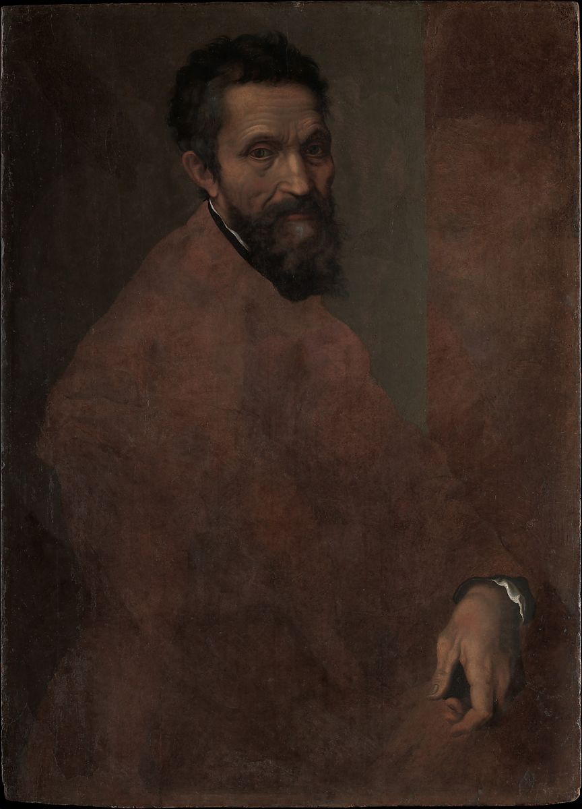

<head>
<meta charset="UTF-8" />
<meta name="keywords" content="drawing, painting" />
<meta name="description" content="drawings by Sunjy" />
<title>Sunjy</title>
<link rel="shortcut icon" type="image/x-icon" href="../../mImages/mCommon/favicon.ico" media="screen" />
<link rel="stylesheet" type="text/css" href="../../mCsses/mCommon/mCssA.css" />
<link rel="stylesheet" type="text/css" href="../../mCsses/mCommon/mCssB.css" />
<link rel="stylesheet" type="text/css" href="../../mCsses/mCommon/mCssC.css" />
<link rel="stylesheet" type="text/css" href="../../mCsses/mCommon/mCssD.css" />
<link rel="stylesheet" type="text/css" href="../../mCsses/mContent/mCssA.css" />
<link rel="stylesheet" type="text/css" href="../../mCsses/mContent/mCssB.css" />
<link rel="stylesheet" type="text/css" href="../../mCsses/mContent/mCssC.css" />
<link rel="stylesheet" type="text/css" href="../../mCsses/mContent/mCssD.css" />
</head>
<script type="text/javascript" src="../../mScripts/mContent/mContentAA.js" /></script>
<script type="text/javascript" src="../../mScripts/mContent/mContentAB.js" /></script>
<script type="text/javascript" src="../../mScripts/mContent/mContentAC.js" /></script>
<script type="text/javascript" src="../../mScripts/mContent/mContentAD.js" /></script>
<script type="text/javascript"></script> 
<script type="text/javascript">
document.write('<div class="mImgAbsolute"></div>');
/*
document.write('<p class="mFontSizeBColor" />From a white paper...</p>');
document.write('<table class="center"><tr><td>');
document.write('');
document.write('</td></tr></table>');
*/
</script>


<script type="text/javascript">
document.write('<p class="mFontSizeBColor" />Michelangelo Buonarroti </p>');
document.write('<p class="mFontSizeSColor" />Probably ca. 1545. This unfinished portrait has been identified as the work of Daniele da Volterra, Michelangelo&#39;s faithful follower and the author of a bronze bust of the great Florentine artist. Indeed, an inventory drawn up after Daniele&#39;s death lists &#34;a portrait of Michelangelo on panel.&#34; The source for numerous copies, the portrait was probably painted about 1545, when Michelangelo would have been around seventy. <br><br>Although the work looks unfinished, Daniele has fully described the sculptor&#39;s features and his left hand, almost as though recalling Michelangelo&#39;s notion that, &#34;It is necessary to keep one&#39;s compass in one&#39;s eyes and not in the hand, for the hands execute, but the eye judges.&#34; </p>');
document.write('<table class="center" /><tr><td>');
document.write('<br>Although the work looks unfinished, Daniele has fully described the sculptor&#39;s features and his left hand, almost as though recalling Michelangelo&#39;s notion that, &#34;It is necessary to keep one&#39;s compass in one&#39;s eyes and not in the hand, for the hands execute, but the eye judges.&#34; " />');
document.write('</td></tr></table>');
</script>


